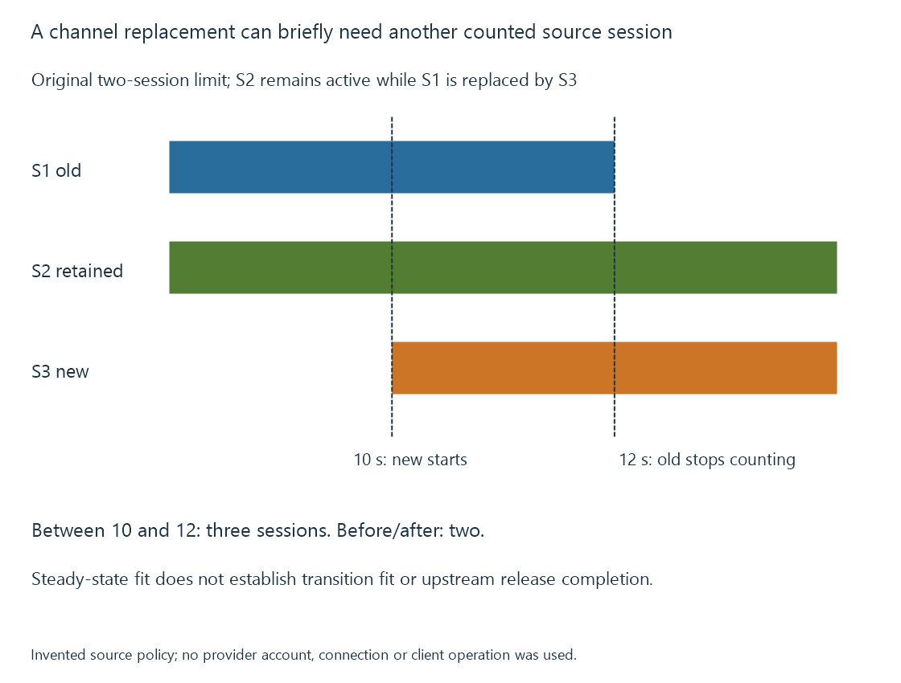

IPTV connection limits
IPTV connection limits constrain a provider or source’s permitted concurrent sessions, independently of stream bitrate and client-facing playback count.
An IPTV source can impose a concurrent connection/session limit. That limit belongs to the provider’s or source interface’s defined policy.
It is not automatically the number of Emby users, the number of entries in an M3U file or a bitrate budget.
Count the sessions the policy actually counts
Use an original two-session policy with these states:
| Session | State in the model |
|---|---|
| S1 | Acquiring News |
| S2 | Acquiring Cinema |
| S3 | New Sport request |
S1 and S2 fill the declared allowance. Opening S3 independently would require three sessions, so it cannot be admitted unchanged under the two-session policy.

The model is not a statement of any real provider’s terms. Different services can count connections at different scopes and can retain closed sessions for a defined release interval.
Channel switching can create temporary overlap
Suppose S1 remains counted until time twelve, while its replacement S3 is requested at time ten. S2 is still counted throughout.
Between ten and twelve, accepting the replacement before releasing the old session would produce three counted sessions. After twelve, only S2 and S3 remain, so the count returns to two.
The steady-state result fits while the transition does not. A route can need an explicit stop/release/start policy rather than assuming that a channel change is one instantaneous event.
The exact release semantics come from the actual source. Closing a client-facing player is not proof that its upstream session has already ceased to count.
Sharing changes viewer-to-session mapping
An implemented server route can acquire News once and redistribute that media to several compatible clients. Three viewers of that acquisition could then depend on one upstream session.
If each viewer opens a separate provider session, the count is three instead. The displayed programme being identical does not establish the chosen policy.
Tuner concurrency develops similar resource-key distinctions. An IPTV session count and a physical RF tuner count are different constraints even when a server presents both as television sources.
Bitrate does not remove a session gate
Two one-Mbit/s sessions still count as two under this declared policy. One twenty-Mbit/s session still counts as one.
Lowering an Emby client target can reduce outgoing traffic or conversion work, but it does not automatically reduce the count or bitrate of original provider acquisitions.
Emby’s M3U source documentation includes a simultaneous-stream-limit setting. Its configured limit should represent the intended source policy; it does not create extra permitted provider sessions.
Release follows the remaining users
If two clients share S1, one closing should not release the upstream source while the other still needs it. When the last dependent use ends, the route can request release according to its source contract.
A reconnect/retry that opens another independent session before accounting for the old one changes the resource count. The current active lifetimes, not the number of visible playback windows alone, explain that demand.
See Also
- IPTV and internet-delivered live channels
- Extended M3U channel lists
- Tuner concurrency and shared acquisition
- Playback stalls and unavailable next media